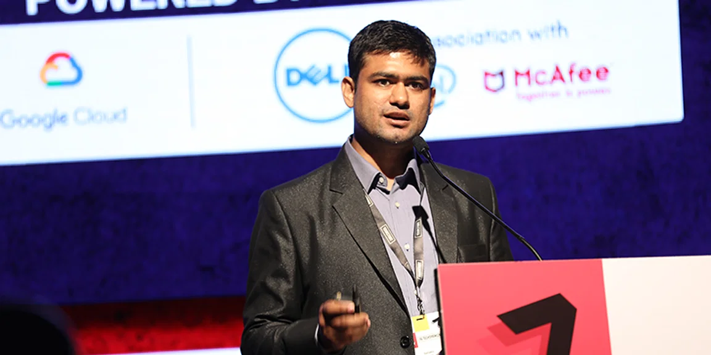

About the Company
Swaayatt Robots is one of the few Indian startups working on solving
the autonomous challenges from a pure algorithmic point of view. The
team makes use of reinforcement learning(RL) for learning various
navigation policies to allow autonomous vehicles to deal with both the
stochastic and adversarial traffic scenarios. For example, their
multi-agent intent analysis and negotiation framework is a multi-RL
agent framework which allows autonomous vehicles to negotiate tight
dynamic roads, at both low and high speeds. They have also developed
perception algorithmic frameworks that help autonomous vehicles
perceive without LiDARs and RADARs, both during the day and at night.
According to the company, their perception algorithms, based on
end-to-end deep learning, are highly computationally efficient
compared to the existing state-of-the-art deep learning systems.
Meet Our Founder

Sanjeev Sharma
CEO and Founder
Sanjeev initiated his research in autonomous navigation in unknown
environments in January 2009, when he was an undergrad student at IIT
Roorkee. Since 2014, his research has spanned across several areas of
theoretical computer science and applied mathematics, focusing on
applications in autonomous driving, including deep learning, computer
vision, SLAM, and visual odometry.His research at Swaayatt Robots, to
enable autonomous driving in environments as difficult as in India,
has been covered by both the national and international media, on
several occasions.
Mission
Make connected autonomous driving technology accessible, affordable
and available to everyone! Significantly reduced Annotated data, Safe
& Robust, Cost-Effective, and Mapless!
Goals
Adaptive Decision-Making: Develop decision-making systems that can
dynamically adjust their strategies based on changing conditions and
evolving data, ensuring safe navigation.
Achievements
Sanjeev Sharma (founder and CEO, Swaayatt Robots), received the
National Enterpreneurs Day Award in the presence of Honourable
Minister of Road Transport and Highways, Govt of India, Mr.
Nitin Gadkari Ji.